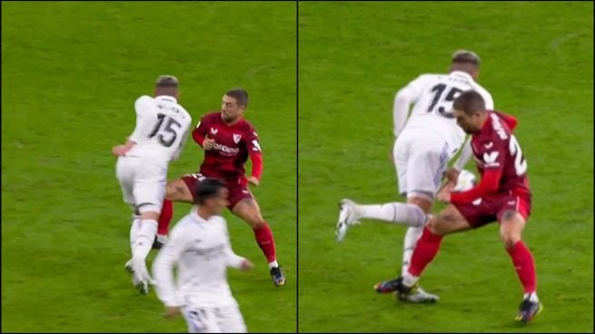
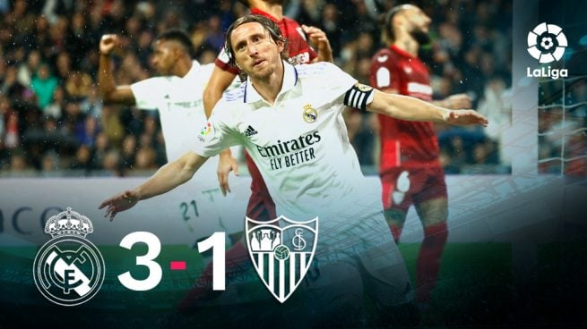

Cuando Sampaoli pidió subir líneas, solo Lamela parecía entender de qué se trataba. Isco iba a lo suyo, un fútbol populista y poco efectivo, mientras Jesús Navas parecía vestir de blanco. Pese a la inoperancia sevillista, sus futbolistas llegaban por inercia y por, casi, obligación, al área de Courtois, que observaba como quien oye llover. Esta vez fue a los ocho minutos cuando Carvajal cometió su tradicional penalti. El lateral, que es de azúcar para el colectivo arbitral como también se vio en el clásico, frenó voluntariamente a Lamela antes de que pudiera rematar un centro de la derecha. El "jueguen, juguen" eterno resonó en el estadio. La jugada, sin embargo, sirvió para que el Sevilla, por fin, despertara de su siesta y empezara a mover el balón con cierto criterio. Todos menos Montiel, que se jugó la roja con una entrada salvaje a Vinicius. Vio la amarilla, el mismo color que recibió Tchouameni por una entrada similar sobre Lamela, que estaba en todas. Rakitic disparó a la barrera. La respuesta fue de Modric, que se durmió en el área rival antes de ver cómo la defensa evitaba el peligro. Vinicius tuvo el segundo antes del descanso. Le llegó un balón de esos perdidos y de cara a barraca, pero como es un futbolista barroco, quiso decorar demasiado lo que ya olía a gol para perder incomprensiblemente el balón por fuera de puerta. El brasileño vive una guerra constante entre su yo prescindible y su yo más práctico (y funcional para su equipo). Lo cierto es que el Sevilla, con el paso de los minutos, fue igualando el partido. Con todo el segundo tiempo por delante...
Los blancos pensaron, tras salir del vestuario, que estaba todo hecho. Y es lo que parecía porque el Real Madrid controlaba el resultado con un pragmatismo inconsciente, casi aburrido. Pero la realidad es que el Sevilla esperaba su momento. Y llegó con el mismo protagonista que había habilitado a Vinicius en el 1-0. Montiel, esta vez, robó el balón limpio en el centro del campo, vio cómo se desmarcaba Lamela y se la puso para que batiera a Courtois con un suave toque con el exterior. Lamela lo volvió a intentar desde fuera del área en una contra provocada por una pérdida de Tchouameni, al que tanto elogio parece no sentarle bien. Acabó sustituido por Camavinga. Los de Ancelotti intentaron subir un poquito el ritmo, algo que no suponía ningún esfuerzo, y Vinicius, que dudó entre lanzarse una vez más a la piscina o acabar la jugada, hizo lo segundo. Mala decisión porque definió fatal. Todo lo contrario que en la contra enlazada por Rodrygo, Fede Valverde y Marco Asensio que acabó en las botas de Vini antes de ver cómo Lucas Vázquez llegaba solo por la derecha. Gol a puerta vacía. El tercero fue de Fede Valverde, que agarró un balón en la frontal y la volvió a enchufar. El uruguayo todo lo que toca lo convierte en gol. El Sevilla dijo "hasta aquí hemos llegado" y "adiós muy buenas, hasta otro ratito".

"Es el prototipo de centrocampista moderno. No veo a ningún centrocampista en el mundo que tenga más incidencia que él en los partidos. Ahora mismo el Real Madrid es Valverde y diez más"
"Este R. Madrid tiene muchos recursos, cuando el encuentro se le puso cuesta arriba Ancelotti movió sus fichas y dio Jaque Mate al Sevilla."
"El Bernabéu le ha puesto la guindilla al equipo. Ni De Bruyne ni nada... Valverde es, ahora mismo, el mejor centrocampista box to box del mundo."
